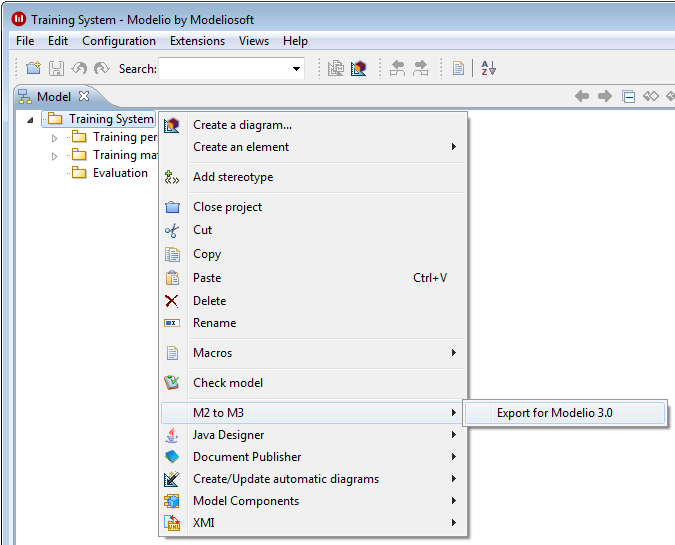
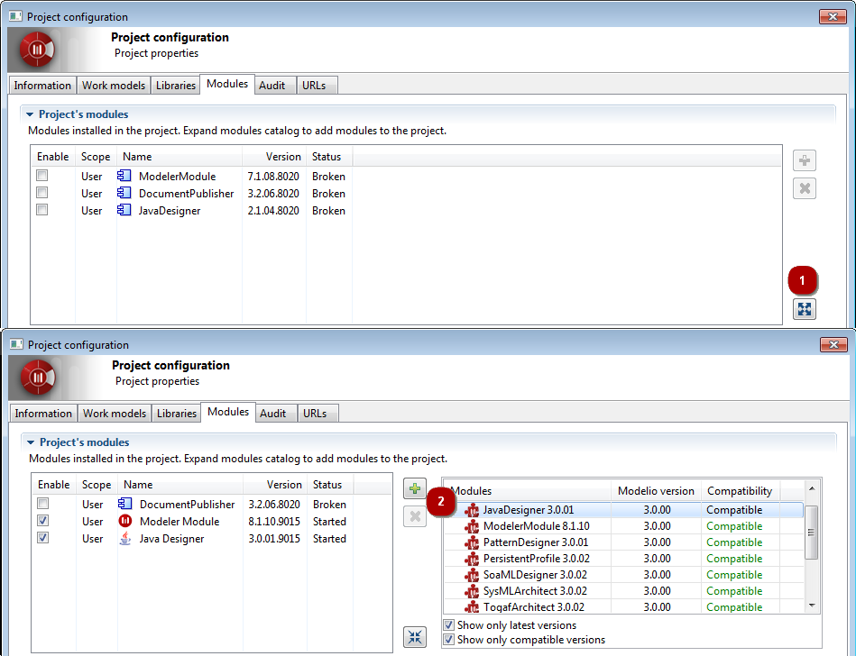

Modules…” or on the
Modules…” or on the  icon then select the ‘Modules’ tab.
icon then select the ‘Modules’ tab.In the Project’s modules list (on the left), identify the broken modules. These are the modules that require an update for Modelio 3.
Modelio 2.2.1 and 2.2.2 projects can be migrated to Modelio 3.
To migrate pre-Modelio 2.2.1 projects, it is necessary to first migrate them to Modelio 2.2.1 using the proper migration procedure.
See: Modelio 1.2 migration to 2.2
The following screenshot shows how to launch the procedure for migrating a Modelio 2.2.1 project to Modelio 3.

That’s all for Modelio 2!
Note: The very first opening of a migrated project might take a while, due to Modelio 3’s different storage technology which requires some first-time initialization of the migrated project.
The new migrated project in Modelio 3 should contain all the data from the Modelio 2 project without any loss. However, the newly migrated project is still referencing modules from Modelio 2 and these modules are obsolete.
This can be easily diagnosed in the Modules tab of the Project configurator dialog as shown in the figure below:

Click on “Configuration\ Modules…” or on the icon then select the ‘Modules’ tab.
In the Project’s modules list (on the left), identify the broken modules. These are the modules that require an update for Modelio 3.
 to install it in the project.
to install it in the project.Note : The Modeling Wizard, Analyst, Analyst Administrator, and Subversion modules are now an integral part of Modelio, their obsoletes versions can simply be removed from the project ( ).
).